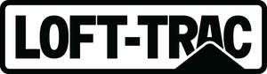

Trade Mark Journal No.2025/011 14 March 2025
UK00004168580 4 March 2025 (6,11,17,19,20,22,37)

- Class 6
- Shelters (Metal -) for use at bus stops; Animals [Traps for wild -]; Lead strips for use on windows; Railway points; Points (Railway -); Objet d'art in bronze; Metal stepladders and ladders; Metal ladders; Ladders of metal; Handrails of metal for stairs; Ladders made principally of metal; Ladders and scaffolding, of metal; Aluminium ladder rungs; Stair rails of metal; Stairs of metal; Handrails of metal for use in buildings; Handrails of metal for walkways; Ladders made wholly of metal.
- Class 11
- Economizers [Fuel -]; Cubicles [enclosures (Am.)] Shower ; Headlamps for use on cycles; Headlamps for use on motor cycles; Furnaces for use by dentists; Multicookers; Plywood drying installations; LED lighting fixtures; LED light bulbs; LED light strips; LED [light-emitting diode] lighting fixtures; LED lighting installations.
- Class 17
- Semi-worked PLA filaments for use in 3D printing.
- Class 19
- Boards (Wooden floor –); Wooden floors; Floor coverings of wood; Timber boarding; Wood flooring; Wood tile flooring; Hardwood flooring; Wooden flooring; Wood; Wood panelling; Wood sheeting; Flooring (Non-metallic -); Floor boards [of wood]; Floor boards of wood; Boards of wood fibre; Wood fibre boards.
- Class 20
- Hangers [Coat -]; Chairs on skid frames; Babies' baskets; Wooden ladders; Ladders made of wood; Ladders of wood or plastics; Ladders, not of metal; Non-metallic ladders; Storage units [furniture]; Furniture for storage; Storage furniture; Storage racks.
- Class 22
- Half down.
- Class 37
- Laundering of babies' diapers; Installation of mezzanine floors; Installation of storage facilities; Assembling [installation] of storage systems; Maintenance and repair of storage installations; Installation of shelving; Installation of lighting systems; Roof installation services; Installing wood flooring; Maintenance of wood flooring; Fitting of wood flooring.
LOFT-TRAC LIMTED